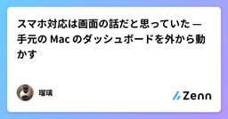
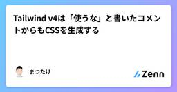
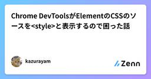
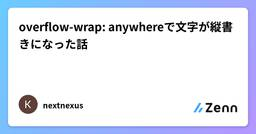
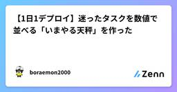
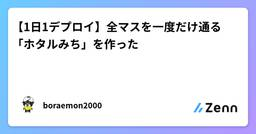
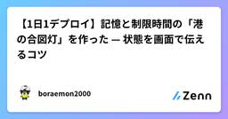
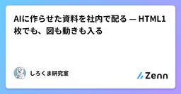
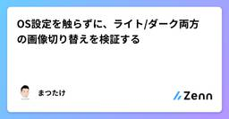
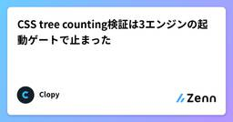

Zennの「CSS」のフィード
フィード

手描き地図と180地点、座標まわりで踏んだ地雷集
Zennの「CSS」のフィード
「もしも天気」の日本タブには、全国180地点のデータを1枚の地図に色分けして表示する機能がある。地図はGISデータではなく、アプリの他の画面と絵柄を揃えた手描き風のイラストで、そのぶん座標まわりで独特のバグを何度も踏んだ。まとめて記録しておく。 手描きの地図を、緯度経度に校正するイラストである以上、緯度経度から単純な直線変換で画面上の位置を求めることはできない。岬の先端・半島・離島・湾の奥や両岸など、地図上で位置が確実に分かる地形を約20〜30点選んで基準点とし、その基準点の「イラスト上の位置」と「実際の緯度経度」の対応から、薄板スプライン(thin-plate spline)と...
12時間前

スマホ対応は画面の話だと思っていた — 手元の Mac のダッシュボードを外から動かす
Zennの「CSS」のフィード
TL;DR手元の Mac で動いている記事管理ダッシュボード（素の Node ＋ バニラ JS）を、スマホからそのまま開けるようにしました。画面を見るだけでなく、チャット欄からエージェントを動かせます画面のたたみ方は CSS 60 行と、既にあった状態クラスの流用で済みました。JS は 1 行も足していません公開経路は Tailscale Serve。サーバのバインドは 127.0.0.1 のままで、アプリ側の認証コードはゼロ行です。認証をネットワークに寄せています手が掛かったのは画面でも経路でもなく、接続の維持でした。スマホは寝るし、回線は切れるし、プロキシは流れを止め...
1日前

Tailwind v4は「使うな」と書いたコメントからもCSSを生成する
Zennの「CSS」のフィード
!2作目のポートフォリオとして「Hubpin」（分散した発信を1か所に集めるハブサイト）を作りながら書いています。リポジトリ: https://github.com/Matsutake29/hubpinNext.js（App Router） + Supabase + Tailwind CSSVS Code の Tailwind CSS IntelliSense が、ある警告を出し続けていました。text-[var(--c-base)] は text-base に短縮できます自分は「それは受け入れてはいけない提案だ」と判断して却下しました。この判断の理由が間違ってい...
1日前

「AがBに取り組んでいる」を空間で見せる手法。弧線と代替5案を比較した
Zennの「CSS」のフィード
「誰がどのプロジェクトに取り組んでいるか」をオフィス風の画面で見せるために、自席から現場区画へ光の弧を架けました。5人同時で5本が絡まり、先例と研究を当たり直して弧は廃止しました。この記事は、そのときの判断材料（先例3つ・可視化研究3本・代替5案）と、最終的に選んだ構成、そして戻さないための番人テストを書きます。 前提作っているのは、Claude Code のスキル・エージェントの稼働ログを「社員がオフィスで働く様子」として可視化する社内ツールです。制約は次のとおりです。CSS / DOM のみ。WebGL 不可、npm / CDN 禁止毎フレーム動かしてよいのは trans...
3日前

Chrome DevToolsがElementのCSSのソースを<style>と表示するので困った話
Zennの「CSS」のフィード
背景わたしは古き良きwebサイトをTypeScript言語でJSX構文を使って書き直そうとしている。ソースコードをコンポーネント指向にしたいから。最終的にはスタティックサイトジェネレーター minista を使って100%静的サイトを生成し、Apacheサーバのhtdocsディレクトリにファイルを配置するだけの素朴な構成を維持しようと念願している。前の記事でわたしがいままでやってきたことを紹介した。スタティックサイトジェネレーター minista を試してみたES Module未対応のjQuery3を使っているwebサイトをJSXで書き直してministaで静的サイトを生成し...
3日前

動画の背景を透明にする方法｜MP4・WebMの違いと黒くなる原因
Zennの「CSS」のフィード
動画の背景を透明にしたいときは、背景を消す処理、透明度を残す書き出し、透明度を表示できる再生環境を分けて考えると、失敗した場所を見つけやすくなります。一般的なH.264のMP4は透過素材の保存には向きません。Webページに重ねるならアルファ付きWebMが候補になりますが、WebMという拡張子だけで透明になるわけではありません。この記事では、動画の背景透過をこれから行う人と、「透過で書き出したはずなのに黒くなる」と困っているWeb制作者に向けて、形式の選び方とHTMLでの確認方法をまとめます。 動画の背景透過は3つの工程に分ける透明度の情報は、アルファチャンネルと呼ばれます。完全...
3日前

overflow-wrap: anywhereで文字が縦書きになった話
Zennの「CSS」のフィード
個人開発している日程調整＋集金アプリ「いいカンジ」で、画面外へのはみ出しを直すために overflow-wrap: anywhere を入れました。その直後、今度は「みんなの回答」テーブルで名前やコメントが1文字ずつ縦に並んで表示される不具合が出ました。 何が起きたか画面幅からはみ出している箇所がいくつかありました。原因は2つあり、どちらも根っこは同じで、flexboxの子要素は既定で min-content 幅未満に縮まないという仕様です。イベント名や説明にURLや英数字の連続した文字列が入ると、既定の overflow-wrap: normal のままでは折り返せず、画面幅...
4日前

【1日1デプロイ】迷ったタスクを数値で並べる「いまやる天秤」を作った
Zennの「CSS」のフィード
今回作ったもの「1日1デプロイ」の作品として、迷っているタスクの優先順位を整理するツール いまやる天秤 を作りました。やることを入力し、次の3項目を1〜5で選びます。効果：終わるとどれくらい前へ進むか急ぎ：今日やる必要があるか手軽さ：すぐ着手できそうか入力したタスクは点数順に並びます。「全部大事に見えて、どれから始めるか決められない」というときに、最初の一歩を選ぶための小さな道具です。▶ いまやる天秤を使う 使い方「やること」へタスクを入力する効果・急ぎ・手軽さをスライダーで選ぶ「天秤に載せる」を押す複数のタスクを登録し、「いまやる順」を見る...
6日前

【1日1デプロイ】全マスを一度だけ通る「ホタルみち」を作った
Zennの「CSS」のフィード
今回作ったもの「1日1デプロイ」の作品として、ブラウザで遊べる経路パズル ホタルみち を作りました。黄色く光るホタルを隣の石へ進め、通れるマスを一度ずつ通って、夜の道をひとすじに灯します。一度通ったマスには戻れないため、目の前の石だけでなく、その先の道も考えて進むゲームです。全10ステージで、後半ほど盤面が広くなり、通れない石も増えます。▶ ホタルみちを遊ぶ 遊び方光っているホタルの上下左右にある石へ進む一度通ったマスを避けながら、すべての通行可能なマスを灯す行き止まりになったら「一手戻す」か「やり直す」全マスを通ると次のステージが開く画面の石をタップでき...
6日前

【1日1デプロイ】記憶と制限時間の「港の合図灯」を作った — 状態を画面で伝えるコツ
Zennの「CSS」のフィード
今回作ったもの「１日１デプロイ」の新作として、記憶とタイミングのゲーム 港の合図灯 を作りました。船が出す赤・白・緑の合図を左から覚えて、潮が引く前に同じ色の灯を同じ順で点けます。波が進むと合図は長くなり、潮の余裕は短くなります。成功するとコンボと得点が伸び、ベスト記録はこの端末のブラウザに保存されます。案内役はカゴシマニアックスのブラピさんです。▶ 港の合図灯を遊ぶ 遊び方「スタート」を押す色が出ているあいだに、合図を左から覚える色が消えたら、1番目から同じ色の灯を点ける潮が引く前にすべて点ければ入港成功PCでは 1 が赤、2 が白、3 が緑です。スマー...
6日前

AIに作らせた資料を社内で配る — HTML1枚でも、図も動きも入る
Zennの「CSS」のフィード
GASで社内だけにペライチのHTMLを公開できる仕組みを作った（弁護士ドットコム Creators' blog）を読んで、同じ仕組みを使い始めました。AIエージェントに資料を書かせるとき、自分ひとりで読むならMarkdownで十分です。ただ、他のメンバーに共有するときや、言葉で説明するより見せたほうが早いときは、HTMLのほうが分かりやすい。レイアウトが崩れませんし、図も画面のモックもそのまま入ります。自分が視覚優位というのもあります。箇条書きを10行読むより図を1枚見るほうが速いし、人に説明するときも、順序を文章で書くより矢印を1本引いたほうが伝わる。問題は、出来上がったHTM...
6日前

OS設定を触らずに、ライト/ダーク両方の画像切り替えを検証する
Zennの「CSS」のフィード
<picture> でテーマ追従させると、確認が2倍になる図やスクリーンショットをテーマに追従させるとき、<picture> を使うと CSS なしで書けます。<picture> <source srcset="/img/diagram-dark.png" media="(prefers-color-scheme: dark)"> <img src="/img/diagram-light.png" alt="構成図"></picture>ダークなら1枚目、そうでなければ <img> の...
6日前

CSS tree counting検証は3エンジンの起動ゲートで止まった
Zennの「CSS」のフィード
対象読者この記事は、CSSのsibling-index() / sibling-count()を採用できるか確かめたい方と、Codexのworkspace-write sandbox内でPlaywrightの複数エンジン検証を計画している方を対象にします。先に結論を書くと、今回の環境ではChromium、Firefox、WebKitのすべてがページを開く前に終了しました。したがって、CSS tree countingの対応状況やDOM更新後の挙動は確認できていません。一方で、依存関係とmanaged browserの取得までは成功し、browser起動を必須ゲートにする必要性を具...
6日前

Salesforce LWCのCSSが反映されないときの原因と対処法｜Shadow DOMとCSS Custom Propertiesの基礎
Zennの「CSS」のフィード
はじめに「LWCでCSSを書いたのに、なぜか子コンポーネントに反映されない」。この現象、一度はぶつかったことがあるのではないでしょうか。私も最初、原因がわからず1時間近く悩みました。親のCSSファイルに書いた指定が、子コンポーネントの中の要素にまったく効かない。CSSの書き方は合っているはずなのに、画面は何も変わりませんでした。この記事では、LWC特有のCSSが反映されないと感じる原因をShadow DOMの仕組みから整理し、正しい直し方をまとめます。CSS Custom Propertiesを使ったスタイリングフックの使い方まで踏み込みます。 そもそも子コンポーネントにC...
7日前

【1日1デプロイ】Canvasで「だんごタワー」を作った — AI開発で動きを頼むコツ
Zennの「CSS」のフィード
今回作ったもの「1日1デプロイ」の5作目として、タイミングゲーム だんごタワー を作りました。左右に動くだんごを、ボタンまたはSpaceキーで落とします。下のだんごにうまく重ねながら8段積めば、月見だんごの完成です。外しても3回までは挑戦でき、積むほど移動速度が上がります。ベスト記録はブラウザに保存されます。保存されるのは段数だけで、画面下の「ベスト記録をリセット」から消せます。▶ だんごタワーを遊ぶ 遊び方「スタート」を押すだんごがお皿の中央に来たタイミングで「だんごを落とす」を押す8段積めたらクリアPCではSpaceキーでも操作できます。スマートフォンで...
8日前

ブラウザだけで遊べる「ジャスト3秒」をHTML・CSS・JavaScriptで作ってデプロイした
Zennの「CSS」のフィード
今日作ったもの数字を見ずに、体感だけで3.000秒を狙うミニゲーム「ジャスト3秒」を作りました。https://mini-lab.lolipop-now.app/apps/2026-09-10-just-three/スタートボタンを押し、3秒だと思った瞬間にストップ。結果はミリ秒単位で表示され、端末内にベスト記録が残ります。クリック・タップに加えて、スペースキーでも操作できます。 なぜこれを作ったか毎日ひとつ、小さなゲームや便利ツールを公開する「１日１デプロイ」を始めました。今回は、ルールを説明しなくてもすぐ遊べて、実装は小さいけれどブラウザAPIの扱いを学べるものに...
8日前
１日１デプロイ「かさね色」の遊び方
Zennの「CSS」のフィード
毎日ひとつ小さなWebを公開している「１日１デプロイ」に、今日の作品を出しました。かさね色薄い色紙を重ねると、光の色が変わっていきます。見本と同じ重ねをつくるパズルです。 遊び方画面右の見本を見る紅・萌黄・縹・黄の色紙を押して重ねるいまの光が見本と同じ色になったらクリア「次の重ねへ」で次のステージへ進む見本に何枚重ねているかは、画面上の「枚数」に出ます。枚数が違うと色は合いません。 操作色紙をクリック、または数字キー 1〜4R か「やり直す」でいまの重ねを外すクリア後は Enter か「次の重ねへ」ステージは順番に開放されます 保存について...
8日前
360px基準のFluid ResponsiveでiPhone Duoも追加対応なし
Zennの「CSS」のフィード
2026年9月、Appleから折りたたみiPhone「iPhone Duo」が発表されました。新しいフォームファクタということで、まず気になったのがレスポンシブ対応です。特にアウターディスプレイが極端に細ければ、これまで使ってきたスマートフォン向けの設計ルールを見直す必要があります。確認した結果、少なくともアウターディスプレイについては、追加対応する必要はありませんでした。 360pxを基準にしたFluid Responsive僕は2019年頃から、スマートフォン向けUIを360pxを基準としたFluid Responsiveで設計しています。360pxで作成したデザイ...
9日前
画像・音声ファイルなしで稟議ガチャを試作する──CSS・Canvas・Web Audioの分担
Zennの「CSS」のフィード
JAXIAの創作・技術検証の一つとして、決裁者を引く「稟議ガチャ」を試作しました。今回はローカルのREADMEとHTML実装を読み、素材を増やさずに演出を組み立てた構成を紹介します。商用の抽選システムや、研修効果を検証済みの教材ではありません。 まず演出の段階を分ける単発の流れは、ガチャ機の振動、カプセル落下、チャージ、レアリティ昇格、開封、カード表示です。段階ごとに、見た目と時間を調整する対象が違います。試作ではCSSクラスの付け外しと待機処理で、この順番を進めています。厳密な状態機械を実装したわけではありませんが、レビューでは段階に分けると「どこが長いか」「何が出る前に音を鳴...
10日前
Markdownから作るPDFのデザインをCSSで自由に変更できるようにした
Zennの「CSS」のフィード
はじめに以前、MarkdownをPDFに変換するCLIツール md2pdf を作りました。md2pdf repositoryMarkdownから、GitHub風のスタイル、Mermaid、日本語、テーブル、コードブロックなどを含んだPDFを生成できます。md2pdf report.mdこれはこれで便利なのですが、実際に仕事で使おうとすると一つ問題が出てきました。Markdownは同じままで、PDFの見た目だけ変えたい。顧客へ提出するレポート、セキュリティ診断報告書、技術提案書、社内標準フォーマットなどでは、GitHub風の見た目だけでなく、自社や顧客のブランドに合わせた...
10日前